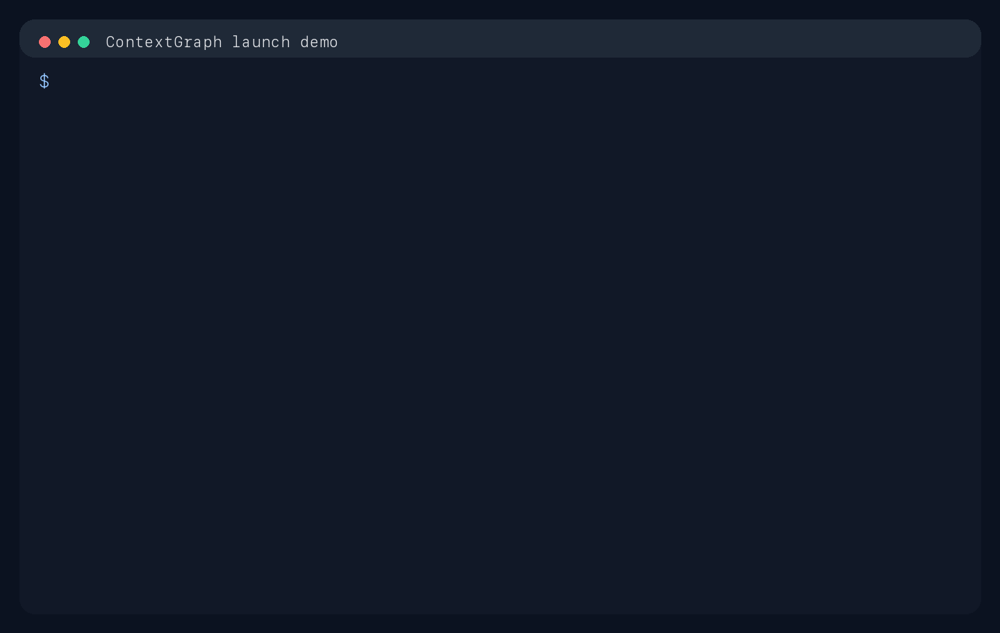

Raw vector memory is not working state
Searchable text is useful, but it does not preserve the live decisions, blockers, and changed files that an agent needs after compaction.
Memory backend for coding agents
ContextGraph preserves durable working state when coding agents hit compaction pressure.
It stores decisions, open tasks, failures, changed files, and restoration instructions,
then makes that state visible inside the repo through .contextgraph/.
.contextgraph/Why now
Searchable text is useful, but it does not preserve the live decisions, blockers, and changed files that an agent needs after compaction.
Compressing an entire session into one paragraph hides what is still open, what failed, and what should not be changed.
It checkpoints structured session state, reuses branch prefixes cheaply, and writes the latest state into the repo so both humans and agents can inspect it.
Core features
Record decisions, constraints, tasks, failures, files, and artifacts as structured events, then emit deterministic delta packs when context gets tight.
Fork from a checkpoint and reuse the shared reduced prefix so child branches recompute only their new work instead of rebuilding the whole session state.
.contextgraph/ Memory Directory
Materialize the latest session into readable repo-local files like resume_prompt.md,
open_tasks.md, and failures.md.
Real-world use case
The agent records durable events during the session: “keep the public REST API stable”, “do not break SDK compatibility”, “resume-path regression is failing”, “add migration tests”, and the files that changed.
When compaction hits, ContextGraph checkpoints that state instead of rewriting the whole chat. If the
work branches, the new session reuses the inherited prefix. If another agent takes over tomorrow,
it can reopen the repo and inspect .contextgraph/ immediately.
How it works
Record decisions, tasks, failures, commands, artifacts, and file changes as durable state.
Emit a delta pack instead of rewriting the whole conversation into one fragile summary.
Fork sessions from checkpoints and recompute only the branch-specific delta.
Open .contextgraph/ to review the latest prompt, failures, open work, and cache state.
Proof

Store, review, and recall memory with provenance, visibility, and policy intact.

Inspect trust, memory state, and shared knowledge through a dashboard built for teams.
Try it